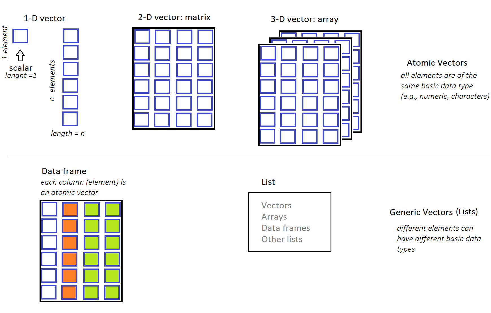

7 Data structures in R: 1-Dimensional Vectors
When we have finished this chapter, we should be able to:
7.1 Introduction to vectors in R
The most fundamental concept in R are the vectors. Vectors come in two broad types: atomic vectors and generic vectors (lists) . The atomic vectors must have all elements of the same basic type (e.g., numeric, characters). On the contrary, in the lists different elements can have different basic types (e.g., some elements may be numeric and some characters).
The R language supports many types of data structures that we can use to organize and store information. We will see that complex structures such as matrices, arrays, and data frames can be created. Each data structure type serves a specific purpose and might differ in terms of the type of data it can hold and its structural complexity. These data structures are schematically illustrated in Figure 7.1
7.2 Atomic vectors
There are four primary types of atomic vectors (also known as “atomic” classes):
- logical
- integer
- double
- character (which may contain strings)
As a group integer and double vectors are considered numeric vectors.
There are also two rare types: complex and raw but we won’t discuss them further because they are not used in this textbook.
One-element atomic vectors
NOTE: R has no 0-dimensional vectors or scalar types.
Individual numbers or strings are 1-Dimensional (1-D) vectors of length one and in some instances we call them scalars. Therefore, an one-element vector (oev) is just a single value like a number and they can be used to construct more complex objects (longer vectors). We present some examples of one-element vectors for each of the four primary types (in order from least to most general type):
1. Logical one-element vector: Logical values are boolean values of TRUE or FALSE which can be abbreviated, when we type them as T or F (we do not suggest this). Examples of logical one-element vectors (oev) follows:
oev_a <- TRUE # assign the logical TRUE to an object named oev_a
oev_a # call the object with its name[1] TRUEoev_b <- FALSE
oev_b[1] FALSEoev_c <- T
oev_c[1] TRUEoev_d <- F
oev_d[1] FALSE
2. Integer one-element vector: Even if we see a number like 1 or 2 in console, internally R may store them as 1.00 or 2.00. We need to place an “L” suffix for integer numbers as in the following examples:
oev_e <- 3L
oev_e[1] 3oev_f <- 100L
oev_f[1] 1003. Double one-element vector: Doubles1 can be specified in decimal (e.g., 0.000017) or in scientific (e.g, 1.7e-5) format:
1 Double format is a computer number format, usually occupying 64 bits in computer memory.
oev_g <- 0.000017
oev_g [1] 1.7e-05oev_scientific <- 1.7e-5
oev_scientific [1] 1.7e-05
4. Character one-element vector: One-element vectors can also be characters (also known as strings). In R, we denote characters using single '' or double "" quotation marks2. Here, we present some examples of character one-element vectors:
2 Internally R stores every string within double quotes, even we have created them with single quotation marks.
oev_h <- "hello" # double quotation marks
oev_h[1] "hello"oev_i <- 'Covid-19' # single quotation marks
oev_i[1] "Covid-19"oev_j <- "I love data analysis"
oev_j[1] "I love data analysis"
Important
R treats numeric and character vectors differently. For example, while we can do basic arithmetic operations on numeric vectors – they won’t work on character vectors. If we try to perform numeric operations such as addition on character vector, we’ll get an error like the following:
h <- "1"
k <- "2"
h + kError in h + k : non-numeric argument to binary operator
The error message indicates that we’re trying to apply numeric operations to character objects that’s wrong.
It’s very rare that single values (one-element vectors) will be the center of an R session. Next, we are going to discuss about “longer” atomic vectors.
7.3 Making longer atomic vectors
Atomic vectors can consisted of more than one element. In this case, the vector elements are ordered, and they must all be of the same type of data. Common example types of “long” atomic vectors are numeric (whole numbers and fractions), logical (e.g., TRUE or FALSE), and character (e.g., letters or words).
Let’s see how we can create “long” atomic vectors and some usefull vector properties through examples.
The colon operator :
The colon operator : generates sequences of consecutive values. For example:
1:5[1] 1 2 3 4 5In this example, the colon operator : takes two integers 1 and 5 as arguments, and returns an atomic vector of integer numbers from the starting point 1 to the ending point 5 by steps 1.
We can assign (or name) the atomic vector to an object named x_seq:
x_seq <- 1:5and call it with its name:
x_seq[1] 1 2 3 4 5We can determine the type of a vector with typeof().
typeof(x_seq)[1] "integer"The elements of the x_seq vector are integers. We can also find how many elements a vector contains applying the length() function:
length(x_seq)[1] 5Other examples:
5:1[1] 5 4 3 2 12.5:8.5[1] 2.5 3.5 4.5 5.5 6.5 7.5 8.5-3:4[1] -3 -2 -1 0 1 2 3 4
The function seq()
We have already explore in Chapter 4 the seq() function which creates vectors of consecutive values (seq stands for sequence):
seq(1, 5) # increment by 1[1] 1 2 3 4 5
The c() function
We can also create atomic vectors “by hand” using the c() function (or concatenate command) which combines values into a vector. Let’s create a vector of values 2, 4.5, and 1:
c(2, 4.5, -1)[1] 2.0 4.5 -1.0Of course, we can have an atomic vector with logical elements as the following example:
c(TRUE, FALSE, TRUE, FALSE)[1] TRUE FALSE TRUE FALSEor equivalently
c(T, F, T, F)[1] TRUE FALSE TRUE FALSEand an atomic vector with character elements:
c("male", "female", "female", "male")[1] "male" "female" "female" "male"
Repeating vectors
The rep() function allows us to conveniently repeat the complete vector or the elements of a vector. Let’s see some examples:
1. Repeating the complete vector.
rep(1:4, times = 5) # 5 times to repeat the complete vector [1] 1 2 3 4 1 2 3 4 1 2 3 4 1 2 3 4 1 2 3 4[1] 0 4 7 0 4 7 0 4 7[1] "a" "b" "c" "a" "b" "c"
2. Repeating each element of the vector.
rep(1:4, each = 5) # each element is repeated 5 times [1] 1 1 1 1 1 2 2 2 2 2 3 3 3 3 3 4 4 4 4 4[1] 0 0 0 4 4 4 7 7 7[1] "a" "a" "b" "b" "c" "c"
Default vectors
R comes with a few built-in vectors, containing useful values:
LETTERS [1] "A" "B" "C" "D" "E" "F" "G" "H" "I" "J" "K" "L" "M" "N" "O" "P" "Q" "R" "S"
[20] "T" "U" "V" "W" "X" "Y" "Z"letters [1] "a" "b" "c" "d" "e" "f" "g" "h" "i" "j" "k" "l" "m" "n" "o" "p" "q" "r" "s"
[20] "t" "u" "v" "w" "x" "y" "z"month.name [1] "January" "February" "March" "April" "May" "June"
[7] "July" "August" "September" "October" "November" "December" month.abb [1] "Jan" "Feb" "Mar" "Apr" "May" "Jun" "Jul" "Aug" "Sep" "Oct" "Nov" "Dec"We will use some of these built-in vectors in the examples that follow.
7.4 Mixing things in a vector - Coercion
Implicit coercion
In general, implicit coercion is an attempt by R to be flexible with data types. When an entry does not match the expected value, R tries to guess what we meant before throwing in an error.
For example, R assumes that everything in our atomic vector is of the same data type – that is, all numbers or all characters or all logical elements. Let’s create a “mixed” vector:
my_vector <- c(1, 4, "hello", TRUE)In this case, we will not have a vector with two numeric objects, one character object and one logical object. Instead, R will do what it can to convert them all into all the same object type, in this case all character objects. So my_vector will contain 1, 4, hello and TRUE as characters.
The hierarchy for coercion is:
logical < integer < numeric < character
Explicit coercion
R also offers functions to force a specific coercion (explicit coercion). For example, we can turn numbers into characters with the as.character() function. Let’s create a numeric vector f, with numbers 1 through 5, and convert it to a character vector g:
f <- 1:5
g <- as.character(f)
g[1] "1" "2" "3" "4" "5"We can turn the characters back to numbers using the as.numeric() function which converts characters or other data types into numeric:
as.numeric(g)[1] 1 2 3 4 5This function is actually quite useful in practice, because many public datasets that include numbers, include them in a form that makes them appear to be character strings.
Next, suppose the object q of character strings “1”, “2”, “3”, “d”, “5” and we want to convert them to numbers using the as.numeric() function:
We observe that R was able to convert the strings "1", "2", "3"and "5" to the numeric values 1, 2, 3 and 5 but it does not know what to do with "d". As a result, if we call as.numeric() on this vector, we get a warning that NAs introduced by coercion (the element “d” was converted to a missing value NA).
Moreover, when the coercion does not really make sense, we will usually get a warning and R turns all the elements into NAs. For example:
x_abcde <- c("a", "b", "c", "d", "e")
as.numeric(x_abcde)Warning: NAs introduced by coercion[1] NA NA NA NA NA
7.5 Mathematical operations and functions applied to numeric vectors
Mathematical operations applied to all the elements of a numeric vector (that is called vectorization). For example:
(1:5) * 2[1] 2 4 6 8 102^(1:5)[1] 2 4 8 16 32The same rule is applied to the elements of the vectors using mathematical functions:
z_seq <- 3:9
sqrt(z_seq) # calculate the square root of all the elements of z_seq[1] 1.732051 2.000000 2.236068 2.449490 2.645751 2.828427 3.000000We can also round the results using the round() function and set the argument digits = 2, as following:
7.6 Relational operators applied between a vector and a scalar
For relational operators (>, <, ==, <=, >=, !=), each element of the vector is compared with a defined value (scalar). The result of comparison is a Boolean value (TRUE or FALSE).
Examples:
m <- c(4, 2, 3, 8)m > 3[1] TRUE FALSE FALSE TRUEm >= 3[1] TRUE FALSE TRUE TRUEm == 3[1] FALSE FALSE TRUE FALSEm != 3[1] TRUE TRUE FALSE TRUE
7.7 Operators applied between two vectors
Arithmetic Operators
The arithmetic operators (+, -, *, /, ^) act on each element of the vector.
Note: R follows the BODMAS (Brackets, Orders (powers/roots), Division, Multiplication, Addition, Subtraction) rule for the order in which it will carry out calculations.
Examples:
t + v[1] 9 5 5t^v[1] 8 9 8t + 3 * v / 2[1] 9.5 6.0 6.5
Relational Operators
For relational operators (>, <, ==, <=, >=, !=), each element of the first vector is compared with the corresponding element of the second vector. The result of comparison is a Boolean value (TRUE or FALSE).
Examples:
w > z[1] FALSE TRUE FALSE FALSEw == z[1] FALSE FALSE FALSE TRUEw >= z[1] FALSE TRUE FALSE TRUEw != z[1] TRUE TRUE TRUE FALSE
Logical Operators applied to vectors
The logical (Boolean) operators are:
-
&,&&(AND) -
|,||(OR) -
!(NOT)
Logical operators are applicable to vectors of type logical or numeric. The result of comparison is a logical (Boolean) value.
Suppose we have the following vectors:
s <- c(1, 0, - 1, 0, TRUE, TRUE, FALSE)
s[1] 1 0 -1 0 1 1 0u <- c(2, 0, - 2, 2, TRUE, FALSE, FALSE)
u[1] 2 0 -2 2 1 0 0How R will compute, for example, s & u?
THE RULE
All non-zero values in the vectors are considered as logical valueTRUEand all zeros are considered asFALSE.
Therefore:
s[1] 1 0 -1 0 1 1 0Logicals: TRUE FALSE TRUE FALSE TRUE TRUE FALSE
u[1] 2 0 -2 2 1 0 0Logicals: TRUE FALSE TRUE TRUE TRUE FALSE FALSE
A. AND Operators (&, &&)
The & operator combines each element of the first vector with the corresponding element of the second vector and gives an output TRUE if both elements are TRUE.
s & u[1] TRUE FALSE TRUE FALSE TRUE FALSE FALSEAdditionally, the && operator takes the first element of both vectors and gives TRUE only if both are TRUE.
s && uWarning in s && u: 'length(x) = 7 > 1' in coercion to 'logical(1)'
Warning in s && u: 'length(x) = 7 > 1' in coercion to 'logical(1)'[1] TRUEB. OR operators (|, ||)
The | operator combines each element of the first vector with the corresponding element of the second vector and gives an output TRUE if at least one of the elements is TRUE.
s | u[1] TRUE FALSE TRUE TRUE TRUE TRUE FALSEAdditionally, the || operator takes the first element of both vectors and gives TRUE if one of them is TRUE.
s || uWarning in s || u: 'length(x) = 7 > 1' in coercion to 'logical(1)'[1] TRUEC. NOT operator (!)
The ! operator takes each element of the vector and gives the opposite logical value.
! s[1] FALSE TRUE FALSE TRUE FALSE FALSE TRUE! u[1] FALSE TRUE FALSE FALSE FALSE TRUE TRUE
7.8 Statistical functions applied to vectors
Statistical functions in R such as sum() and mean() take as input the values of a numeric vector and return a single numeric value:
v_seq <- 5:10
v_seq[1] 5 6 7 8 9 10sum(v_seq) # adds all the elements of a vector[1] 45mean(v_seq) # calculate the arithmetic mean[1] 7.5median(v_seq) # calculate the median[1] 7.5sd(v_seq) # calculate the standard deviation[1] 1.870829range(v_seq) # returns the minimum and maximum values[1] 5 10
Next, we add a missing value NA in the v_seq vector:
We can see that the v_seq2 vector is of integer type.
However, if we try to calculate the mean of the v_seq2, R returns a NA value:
mean(v_seq2)[1] NATherefore, if some of the values in a numeric vector are missing, then the mean of the vector is unknown (NA). In this case, it makes sense to remove the NA and calculate the mean of the other values in the vector setting the na.rm argument equals to TRUE:
mean(v_seq2, na.rm = TRUE)[1] 7.5
7.9 Subsetting vectors
It’s often useful to extract a single element, or a set of specific elements from a vector. In the following examples, we will use the built-in month.name vector:
month.name [1] "January" "February" "March" "April" "May" "June"
[7] "July" "August" "September" "October" "November" "December"
Subsetting with the extract operator [ ] (indexing by position)
A. Extract specific elements of a vector
We can extract parts of the vector with the extract [ ] operator. For example:
month.name[3] # extract the 3rd month[1] "March"month.name[3:5] # extract the 3rd, 4th, and 5th months[1] "March" "April" "May" So, in the second code example, the vector 3:5 created the sequence of indices 3, 4, 5 which passed to the extract operator [ ].
We can also get the previous result using the vector c(3, 4, 5):
month.name[c(3, 4, 5)][1] "March" "April" "May"
The first element of a vector
In R, the first element of a vector starts at index of 1. In many other programming languages (e.g., C, Python, and Java), the first element in a sequence has an index of 0.
Note that the values are returned in the order that we specify with the indices. For example:
month.name[5:3] # extract the 5th, 4th, 3rd elements[1] "May" "April" "March"We can also extract the same elements of a vector multiple times:
month.name[c(1, 2, 3, 3, 4)] # the 3rd element is extracted twice[1] "January" "February" "March" "March" "April"
B. Skip specific elements of vectors
A negative index skip the element at the specified index position. For example:
month.name[-3] # skip the 3rd month [1] "January" "February" "April" "May" "June" "July"
[7] "August" "September" "October" "November" "December" We can also skip multiple elements:
month.name[c(-3, -7)] # skip the 3rd and 7th elements [1] "January" "February" "April" "May" "June" "August"
[7] "September" "October" "November" "December" which is equivalent to:
month.name[-c(3, 7)] # skip the 3rd and 7th elements [1] "January" "February" "April" "May" "June" "August"
[7] "September" "October" "November" "December"
A common error occurs when trying to skip certain parts of a vector. For example, suppose we want to skip the first five elements form the month.name vector. First, we may try the following:
month.name[-1:5] This gives an error:
Error in month.name [-1:5]: only 0’s may be mixed with negative subscripts
Remember that the colon : is an operator in R; in this example it generates the sequence -1, 0, 1, 2, 3, 4, 5.
A way of solving the problem is to wrap the sequence in parentheses, so that the “-” arithmetic operator will be applied to all elements of the sequence:
-(1:5)[1] -1 -2 -3 -4 -5month.name[-(1:5)] # skip the 1st to 5th element[1] "June" "July" "August" "September" "October" "November"
[7] "December"
Subsetting with logical vectors (indexing by conditon)
We can also pass a logical vector to the [] operator indicating with TRUE the indices we want to select. For example, let’s say that we want to select only the first four months of the year:
fourmonths <- month.name[c(TRUE, TRUE, TRUE, TRUE, FALSE, FALSE,
FALSE, FALSE, FALSE, FALSE, FALSE, FALSE)]Furthermore, if we want to exclude “March” from the fourmonths vector we should code:
fourmonths[c(TRUE, TRUE, FALSE, TRUE)][1] "January" "February" "April"
7.10 Vector recycling
What happens if we supply a logical vector that is shorter than the vector we’re extracting the elements from?
For example:
fourmonths # call the "fourmonths" vector[1] "January" "February" "March" "April" fourmonths[c(TRUE, FALSE)] # we provide a vector with only two elements[1] "January" "March" This illustrates the idea of vector recycling. The [ ] extract operator silently “recycled” the values of the shorter vector c(TRUE, FALSE) in order to make the length compatible to the fourmonths vector:
fourmonths[c(TRUE,FALSE,TRUE,FALSE)][1] "January" "March"
Let’s look at another example. Suppose we have two numeric vectors with different length. In this case, how R will perform arithmetic operations such as “addition”?
c(3, 2, 7) ? ? ?
| | | | | |
c(6, 4, 0, 5, 8, 6) The sum of the two vectors is:
So, what happened here?
Explanation
If we sum these two vectors then R automatically recycles the shorter vector, by replicating it until it matches the length of the longer vector as follows:
c(3, 2, 7, 3, 2, 7)
| | | | | |
c(6, 4, 0, 5, 8, 6) So, the element-wise addition is feasible and equivalent to the following:
Important
If the longer vector length isn’t a multiple of the shorter vector length, then R performs the calculation and prints out a pertinent warning message. For example: